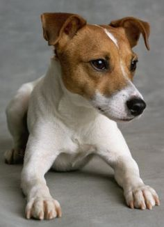

Welcome
Welcome in my page and my life. I want to introduce myself.
My name is Rocky.
I am 2 years . and I am living with my human family.
I was just a small puppy that came to my house.
My mother said :"You are so cute..." .Yes I am.
I think that I am an important member of my family.
- They pay attention to me.
- Stroking me
- My clothes and towels are washed clean
- I'm just getting gift for everything.
- My toys are just for me.
- The meal is ready at the clock
A bath with massage is prepared for me.
- my hair should be brushed at least once a day.
- My hairdresser is booked a month ahead
And more expensive than the rest.
- Everyone in the house has a bed. But I have two.
I am sure they could not live without me.
My family taught me what to do and what do not do it.
|
 |
- Sit down
- Be quiet
- Bring your ball
- Come on two legs
- Turn around
- Hide and go seek
- Run
- Caring for the house
|
Of course, the last thing is hard.
I'm throwing thieves out of your yard every day.
They see me run away. I do not know why my mummies make grain for
thieves to eat.
Food
I'm always ready to eat. But I could have 2times per day –breakfast and dinner.
Sometimes they make fresh & healthy food for me, otherwise I'll eat my own dish.
They care that I do not eat the wrong food. Because it could make my health
worse.
9 foods I should never eat :
1. Anything containing the sweetener Xylitol
2. Chocolate, coffee and caffeine
3. Onions, garlic and chives
4. Raw/undercooked meat, eggs and bones
5. Grapes and raisins
6. Salt and salty snack foods
7. Nuts
8. Alcohol
9. Medications
This is my dry food.
If you want to visit the site of Royal Canin.
Every dog owner knows that good dog nutrition is vital to health and wellness,
and that dogs have differing needs depending on their age, condition and life
stage.
While it is to be hoped that any diet that sells itself as “complete and
balanced” should fulfill all of your dog’s nutritional requirements, all
pre-packaged dog foods are not necessarily so.
As with people, there isn’t one diet that suits every dog. Some dogs will have
allergies, sensitivities or may well just be fussy eaters!
But there are some good all round tips for maintaining optimum
health, including:
- Water supply
- No human food
Balanced dog nutrition
- Fats and carbohydrates
- What kind?
- Good fatty acids
- Dental care
- Overfeeding
Playing & Hobby
Games to Play with Your Dog
- Purposeful Playtime For Your Dog. Play is a natural and fun way to
interact with your dog. ...
- Enriching Your Dog's Life. ...
Positive Stimulation. ...
- Avoiding Over stimulation. ...
- Playtime With Your Dog. ...
- Hide the Treat. ...
- Chase the "Prey" ...
- Hula Hoop Leaping.

7 rainy day games to play with your dog
- Scent work with hidden treats. Let your dog use his
nose to sniff out prizes and treats.
- Hide and go seek. ...
- Under, over and through. ...
- Stairway dash. ...
Tag You're It. ...
- Teaching him to help you clean up. ...
- Obstacle course.
Though exercise needs are based on a dog's age, breed, size and
overall health, your dog should spend between 30 minutes to two
hours on an activity every day. Breeds in the hunting, working, or
herding groups (e.g., Labrador retrievers, hounds, collies and
shepherds) will need the most exercise..
How to Keep Your Dog Happy and Healthy:
If you want your dog to thrive, then you need to learn the best
ways to keep him happy and healthy. Dogs with proper health care and
appropriate behavior will also make your life more delightful.
Your dog's health and behavior go together and one directly
impacts the other. A sick dog might exhibit certain clues of illness
or develop behavioral problems, while a healthy dog learns faster
and shows positive body language.
Arguably the most important aspect of your dog's well-being is
health. An unhealthy dog will not benefit as much from training and
they may also develop behavior problems.
Your veterinarian will play a crucial role in
your dog's health, so find one that you trust and will be
comfortable with for years. It all begins with puppy vaccinations or
the first checkup for your rescue dog, then continues through their
annual exams and shots.
Socialization means training your dog or puppy to
accept new people, animals, and places. Socialization results in a
happier, more well-behaved dog. Plus, it prevents behavior problems
from developing.
Training your dog is easy and fun. Granted, some are more stubborn
than others and some breeds are a natural fit for certain commands
and tricks, but every dog should know the basics.
Train your dog to sit, stay, lie down, and come when called. Once
she gets the basics and you have formed a good bond, try adding a
few cute dog tricks like shaking and playing dead. Fetch is also a
great way to bond, train, and get exercise.
Grooming and cleaning
Brushing Your Dog. Regular grooming with a brush or comb will help
keep your pet's hair in good condition by removing dirt, spreading
natural oils throughout her coat, preventing tangles and keeping her
skin clean and irritant-free.
Have you ever watched your dog roll on the ground, lick her coat or
chew at her fur? These are her ways of keeping clean. Sometimes,
though, she’ll need a little help from you to look and smell her
best.
|
|
- Bathing
- Brushing Your Dog
- Shedding
- Skin Problems
- Dental Care
- Eye Care
- Ear Care
- Nail Care
- Paw Care
|
Gallery
I am very happy that you saw my web page.
Email: shabnamfaesi@gmail.com
Tel: 0031611147116